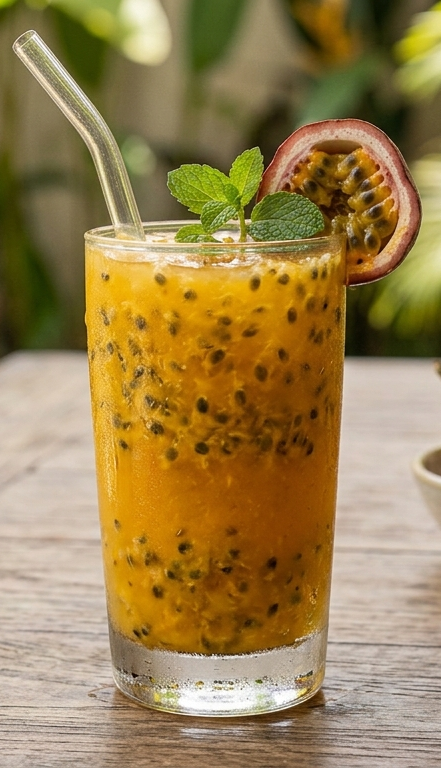

About Us
Freshness by Julia
We make fruit drinks with a simple goal: great taste and fresh moments.

Juice by Julia
Made with freshness in mind.
Juice by Julia is a fruit juice and smoothie business based in Namungoona. We serve refreshing mango, passion, watermelon and avocado juices, together with smoothies.
🍃 FreshFruit-focused drinks prepared with care.
🥤 DeliciousFlavours made for everyday enjoyment.
🚚 ConvenientDelivery available for your order.